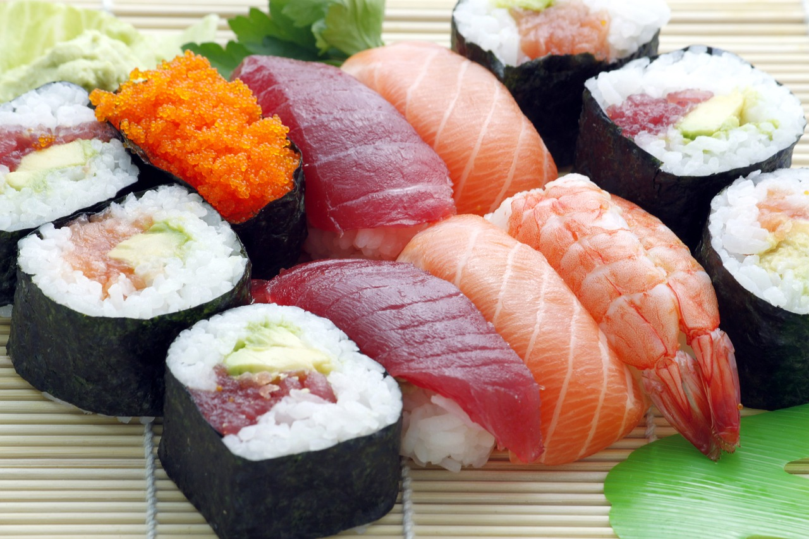
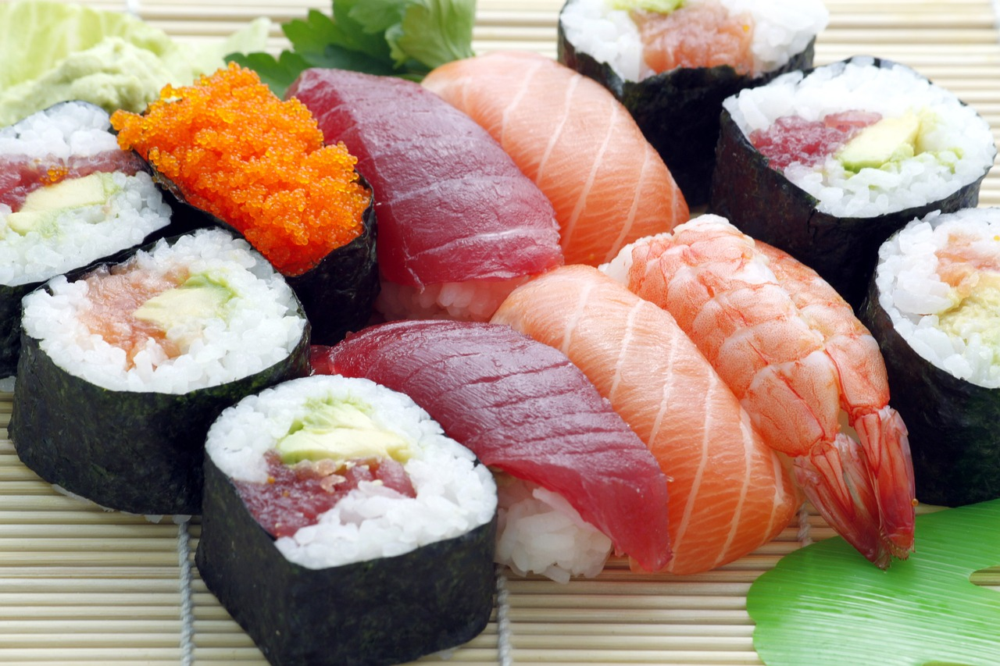

¡Bienvenido a Katana, el destino definitivo para los amantes del sushi
en la Costa del Sol! Nuestro restaurante te transportará a Japón con sus
auténticos platos y un equipo de chefs japoneses expertos en la creación
de delicias culinarias. En Katana, nos enorgullece presentar una
selección incomparable de sushi fresco y sabroso. Desde los clásicos
nigiri y sashimi hasta los innovadores rolls de autor, cada plato es una
fusión perfecta de sabores y texturas que deleitará tu paladar. Nuestro
compromiso con la excelencia se refleja en cada detalle. Utilizamos
ingredientes cuidadosamente seleccionados, garantizando la frescura y la
calidad en cada bocado. Además, nuestro equipo de servicio te brindará
una experiencia personalizada, asegurándose de que cada visita sea
inolvidable. Sumérgete en el ambiente sofisticado y acogedor de Katana,
donde la tradición japonesa se encuentra con la pasión por la
gastronomía. Ya sea que busques una cena romántica, una celebración
especial o una salida con amigos, nuestro restaurante es el lugar ideal
para disfrutar de momentos inolvidables. Reserva ahora y déjate llevar
por la magia de Katana. Descubre por qué somos el destino preferido para
los amantes del sushi en la Costa del Sol. ¡Te esperamos con los brazos
abiertos para llevarte en un viaje culinario único!

 
